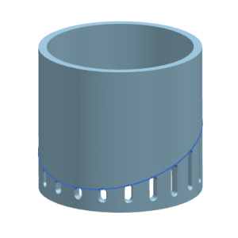
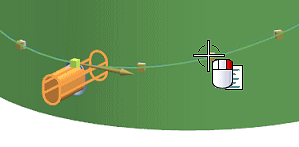
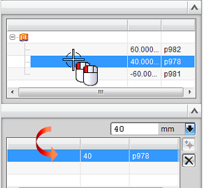
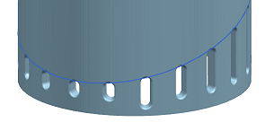
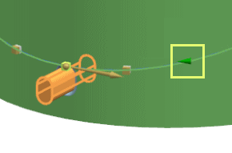
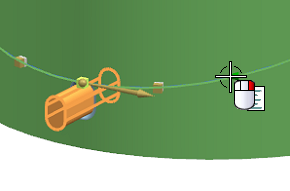
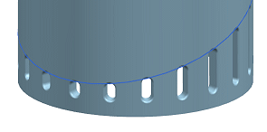

Open des18_85_pattern_feature_edit_instances.

In the Part Navigator, double-click Pattern (Along).
With the cursor on the third instance handle, right-click and select Specify Variance.

In the Variance dialog box, in the Parameters group, double click Perpendicular Dimension between DATUM43 and Arc19.

The perpendicular dimension becomes available for edit in the Values group.
Type in a value of 20.
In the Variance dialog box, click OK.
In the Pattern Feature dialog box, click OK.

Notice the third slot now starts 20 millimeters from the bottom of the part.
In the Part Navigator, double-click Pattern (Along).
Notice that instance point that has a variance is displayed as a arrow.

With the cursor on the instance handle, right-click and select Remove Variance.

In the Pattern Feature dialog box, click OK.

The slot returns to its pre-variance state.